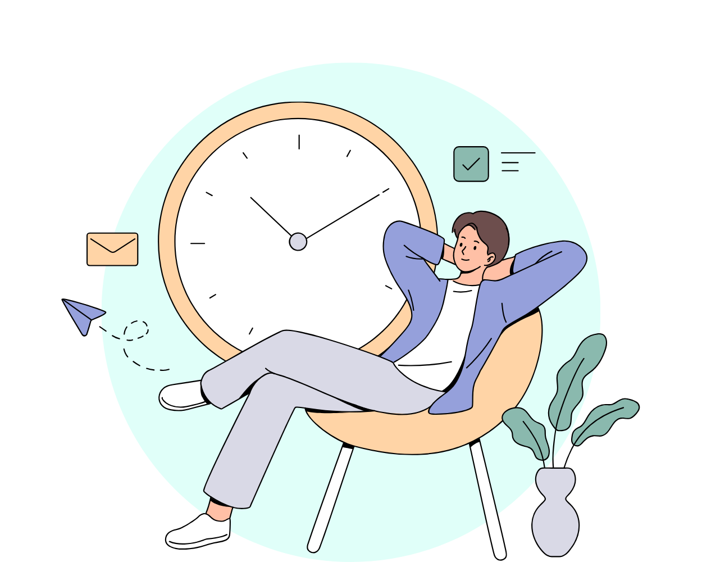

Exempel på åtgärder
- Minska arbetsmängd
- Ändra prioriteringar
- Variera arbetsuppgifter
- Ge möjligheter till återhämtning
- Öka bemanning eller förbättra kunskaper
- Arbetsuppgifter och tydlighet
Konflikter i arbetslivet
Arbetsgivaren ska se till att arbetsuppgifter och ansvar som ges till anställda inte leder till ohälsosam stress. Det innebär att resurserna ska vägas upp mot arbetets krav. Arbetsgivaren ska även se till att arbetsuppgifter och ansvar matchar de resurser som finns. Det är viktigt att upptäcka och åtgärda tecken på ohälsosam stress, som för hög arbetsmängd eller bristande stöd.
Information till de anställda
- Vad de ska göra
- Vilket resultat som förväntas
- Hur arbetet ska utföras
- Vilka uppgifter som ska prioriteras vid tidsbrist
- Vem de kan vända sig till för stöd

Psykiskt påfrestande arbete
Vid arbetsuppgifter som är psykiskt krävande, som att hantera konflikter eller
traumatiska situationer, ska arbetsgivaren ge stöd och utbildning samt ha rutiner för att
hantera dessa situationer.

Arbetstidens förläggning
Arbetsgivaren ska planera arbetstider så att de inte leder till ohälsa. Risker finns vid:
- Skiftarbete och nattarbete
- Delade pass eller långa arbetspass
- Förväntan att alltid vara nåbar
- Återhämtning är särskilt viktig att prioritera
Vikten av dialog och samarbete
Arbetsgivaren ska skapa en miljö där anställda kan påpeka höga krav, brister i resurser
eller andra problem. Regelbunden dialog mellan chefer och anställda är avgörande för att
upptäcka och lösa obalanser i arbetsbelastning.